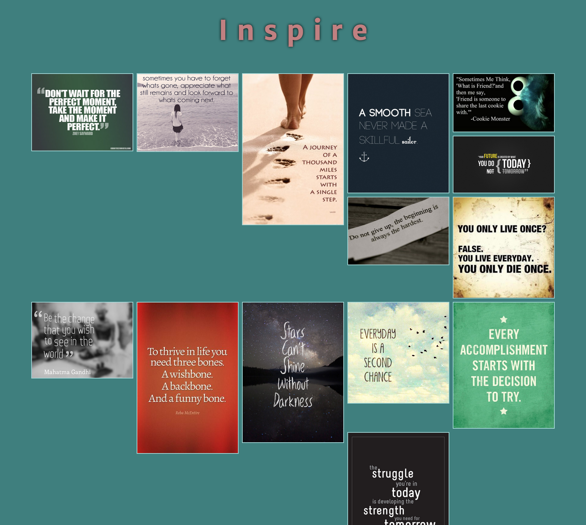
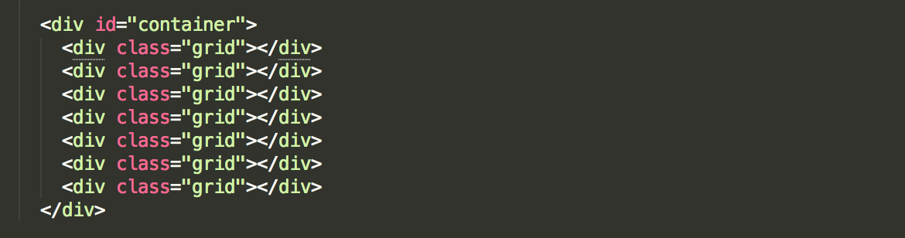
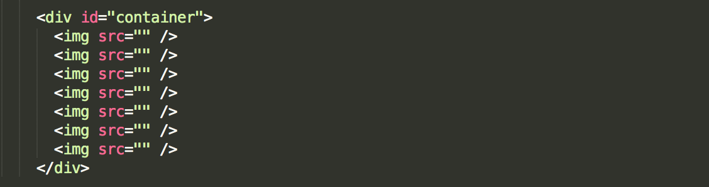
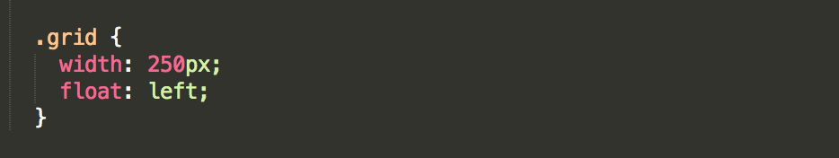
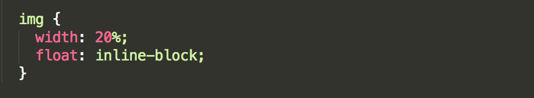
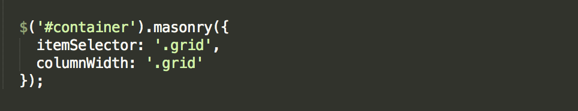

What is Masonry?
Masonry is a cascading grid layout library designed by David DeSandro. It was originally designed to work with jQuery, but there is also a "vanilla" version which works with JavaScript. This tutorial will specifically focus on its use with the jQuery library.
[Masonry] works by placing elements in optimal position based on available vertical space, sort of like a mason fitting stones in a wall.
Basically, Masonry respositions a group of floated elements on your page to align them vertically based on their height, then horizontally. Traditional CSS floating aligns elements horizontally, then vertically. So, when you want to have a nice grid layout of floated elements that have different heights, the rows will not be even. You can use Masonry to have the elements realigned.
Before Masonry
Images of varying heights
After Masonry
Images are now aligned vertically
Masonry's Layout is Responsive
Based on the width of the client screen, Masonry will automatically relayout the elements in its grid.
- Three-column grid - displayed if screen is > 640px.
- Two-column grid - displayed if screen is <= 640px and > 320px.
- One-column grid - displayed if screen is <= 320px.
Typical Website Usage of Masonry
While of course creativity should always be paramount to only using Masonry if your website is of one of these types, here are the most popular types of websites which showcase elements with this library:
- Image galleries are the most popular use of Masonry
- Blog posts
- Portfolio presentations
Links to Popular and Fancy Samples of Websites which Use Masonry
Pinterest was the first major website to use Masonry.
Things to Consider For Using Masonry for Your Website
- Masonry works best if there is a lot of material to display.
- If you are going to use any other plugins or interactivity with the Masonry elements, you may have to play with Masonry a little more to get it to do what you want. (i.e. Image Loader, Google Fonts, Infinite Scroll, etc.)
- Using an additional plugin to layout your Masonry grid (not discussed in this tutorial).
- Masonry is simple to use and has several options and methods to customize it to work with other plugins if you need.
Masonry Demos
Here are some demo websites I made which you can interact with to see how Masonry looks as well as get an idea of how it works.
Get Started with Masonry!
Yea, Masonry looks pretty awesome and has some nice built-in-auto-activate-fancy-stuff. It's also pretty easy to set-up and get going with using it! As I mentioned above, keep in mind that you may end up having to fidget with your code or Masonry options depending on what else you're doing with the elements or your webpage.
Get Masonry on Your Webpage
- Get jQuery on your webpage first. Either use a CDN or download it yourself.
- Here's a quick link you can use: https://code.jquery.com/
- Get Masonry source on your webpage. Again, you can either use a CDN or download it.
- Masonry code link here: https://github.com/desandro/masonry
Set Up Your Container Div and Grid in Your HTML
Masonry is designed to work with a container element which has child elements. Often divs, images, or lists will be the content for the grid.
 Set Up the CSS for Your Grid Items
At a minimum, you need to set a width and floats for your items.
Tip!
Masonry will also work if you set the css display property to "inline-block" instead of using "float: left;"
 Call Masonry in Your Script
To get Masonry doing just its basic job for your webpage, all you simply need to do is call it on your container div as shown below. Masonry does not require you to pass in anything into the function call. However, it is recommended, and I highly advise it too, that you specify the itemSelector option.
If you do not specify an itemSelector, Masonry will default to the child elements in the container. If you specify any options with the Masonry call, pass them in as an object as shown above. The object's properties are the Masonry options you wish to specify. Full detail on Masonry options are found on the options section of the Masonry website.
Tip!
I found that not setting a columnWidth option on the Masonry call and just using my CSS for margin and padding of the grid elements was the easiest way for my layout to look as I wanted.
Additional Libraries You May Need With Masonry
Using Masonry with Images
We have an idea now of how fantastic Masonry can make an image gallery look. However, you will want to get an additional library called imagesLoaded to make Masonry fire after your images are loaded. It's pretty easy to add and only requires just a few additional lines of code.
- Get the imagesLoaded library on your webpage.
- Helpful link here: https://github.com/desandro/imagesloaded
- Call imagesLoaded on your container div and pass in a function which calls Masonry.

Using Masonry With Google Fonts
You'll definitely notice problems with your grid layout if you're using Google fonts. You can fix this with loading a special plug-in instead of loading your Google Fonts as you usually do and doing just a little bit of extra work in your JavaScript.
- You need to use Google and Typekit's Web Font Loader
- Load the Web Font Loader on your webpage in a <script> tag.
- If you just want to use the CDN, you can find it on Google Hosted Libraries
- Copy the syntax immediately below and configure it to your needs.
- Specify the Google font families you want in the "families" array.
- Set up your Masonry parameters in the "active" method.